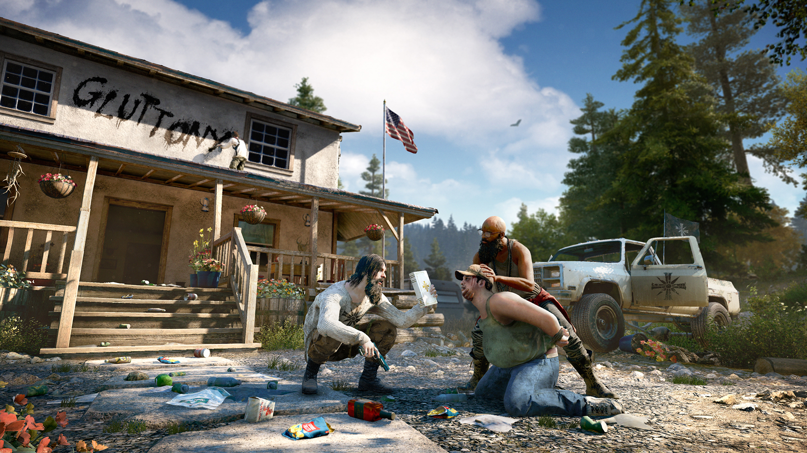
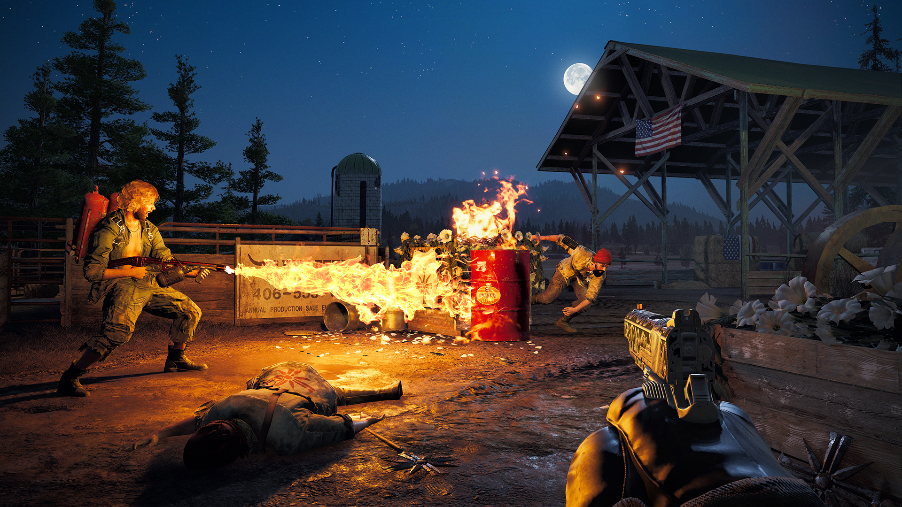

It is the successor to
2014's Far Cry 4, and the fifth main installment in the Far Cry series.
Set in Hope County, a fictional region of Montana, United States, the game
revolves around the Project at Eden's Gate, a doomsday cult that has taken
over the county at the command of its charismatic and powerful leader,
Joseph Seed. Players control an unnamed junior deputy sheriff who becomes
trapped in Hope County and must work alongside various resistance factions
to liberate the region from the despotic rule of the Seeds and Eden's
Gate. Gameplay focuses on combat and exploration; players battle enemy
soldiers and dangerous wildlife using a wide array of weapons. The game
features many elements found in role-playing games, such as a branching
storyline and side quests. The game also features a map editor, a
co-operative multiplayer mode, and a competitive multiplayer mode.
Announced in early 2017, development on Far Cry 5 was extensive. The team
explored several concepts before settling on an American location. The
game was heavily inspired by several socio-political events in modern
history, such as the Cold War and the September 11 attacks.

The
development team sought to capture the despondent social climate after the
events and re-purpose it for the game. Developed and published solely by
Ubisoft, its competitive multiplayer mode was also created in-house, with
the company's worldwide studios gaining more creative input for Far Cry 5.
Far Cry 5 was released worldwide for PlayStation 4, Windows, and Xbox One
in March 2018. It received mostly positive reviews, although it was the
subject of controversy after being announced alongside a period of
heightened political conflicts.

Critics praised the open world design,
visuals, gameplay and soundtrack but directed criticisms towards its story
and some of the characters. The game was a commercial success, becoming
the fastest-selling title in the franchise by grossing over $310 million
in its first week of sales and had sold over 10 million units by March
2020. Several releases of downloadable content were subsequently
published. A spin-off title and sequel to the narrative, Far Cry New Dawn,
was released in February 2019. A successor, Far Cry 6, was released in
October 2021.